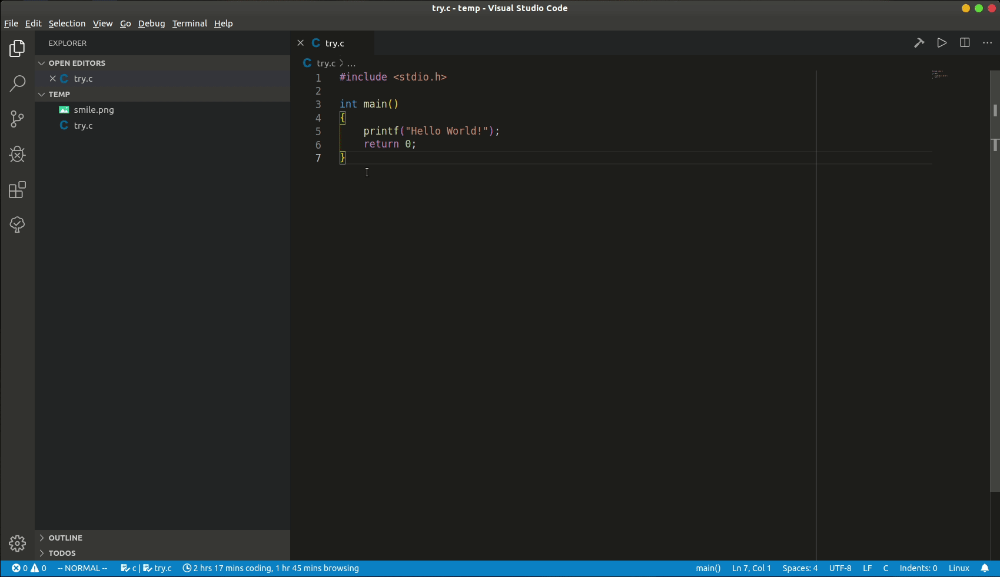

Here is a tutorial for configuration of VSCode to run C/C++ programs on Windows. Mainly I wrote it for my C/C++ Extension Pack üéâ
Actually how can we run C/C++ code in VSCode has been described clearly in the C++ part of VSCode document, here is just my personal understanding of this work and I suppose my description is more friendly with beginners üòÑ
Requirements
VSCode itself is just a editor, can not do things like compilation, even we add VSCode’s official extension for C/C++ called cpptools, it does not install a compiler for us.
Compiler
So undoubtedly, our first step is to install a compiler. There are a few choices, the one recommended by VSCode’s document on Windows platform is MinGW-w64.
⚠ we have to notice that there is another thing called MinGW which is different from MinGW-w64. Although MinGW also works, but this project hasn’t update for a while and we need more steps to install it. In addition, there should be a reason that VSCode document does not recommend it but MinGW-w64.
Installation
after downloaded the installer we are good to start installation, there are mainly two options we have to change and leave the other options as the default:
- on the first page of the install wizard you are asked to choose your
Architecture, set it to x86_64 if your computer is 64-bit, set it to i386 if your computer is 32-bit. - you can install it to where ever you want but make sure you can find it later, since we have to add it to Path manually after the installation.
Add to Path
After the installation we have to add our compiler to the Path so that it can be called from the command line / powershell. (this is actually how VSCode calls the compiler)
But what path to add?
The path add to the Path is actually the folder path of the executable file
of the application we want to call. For example I installed MinGW-w64 to
D:\Softwares\mingw-w64\x86_64-8.1.0-posix-seh-rt_v6-rev0, then I should add
D:\Softwares\mingw-w64\x86_64-8.1.0-posix-seh-rt_v6-rev0\mingw64\bin to the
Path. You can see the two applications we are going to call, gcc.exe and
gdb.exe are exactly there ✌
üîó If you are no sure how to add something to the Path, this may helps you üëç
Test
Now! We can test if we successfully add the compiler to the Path by typing gcc
in the cmd.
✔ What we should see is:
1 | C:\Users\LeoJh>gcc |
❌ What we should not see is:
1 | `gcc`is not recognized as an internal or external command, |
Which means you may have added wrong path to Path.
VSCode Extensions
We are not far from completion as we have successfully get our compiler ready
:smile: Actually we are now able to develop C/C++ code! (Although it may seems
hardcore) Don’t believe? Open cmd and get into te folder where you have a piece
of C/C++ code to test, type gcc test.c or gcc test.cpp and you will find a
a.exe is generated in the current folder. This is exactly the executable
file we just compiled!
But this does not feels good, so we use extensions in VSCode to improve the situation.
I recommend my C/C++ Extension Pack since it includes only a few but really useful tools.
Configuration files
In some tutorials it is said that we have to generate c_cpp_properties.json,
tasks.json, launch.json three files, but the situation has changed! :tada:
c_cpp_properties.json has been totally replaced by settings in
settings.json. The advantage is that we can set different values for different
workspace. Also, you will later see that configuring tasks.json and
launch.json becomes REALLY easy too!
:link: click
here
to learn more about what has been replaced by settings.json in
c_cpp_properties.json.
:link: click
here
to learn more about what could have been set in c_cpp_properties.json.
⚠ the following configuration uses my settings as an example.
IntelliSense configuration
As mentioned above, we are able to develop C/C++ without VSCode, so, from my
point of view, IntelliSense which provides us with smart suggestions is a very
important part of language support for C/C++ in VSCode. We could configure the
IntelliSense by editing settings.json. The most useful ones are:
1 | "C_Cpp.autocomplete": "Default", |
the segments C_Cpp.clang_format_style and C_Cpp.clang_format_fallbackStyle specify the format style of how VSC format C/C++ code. The above value makes a code style similar to C/C++ code style in Visual Studio. If you prefer Google Style, the following piece is what you need.
1 | "C_Cpp.clang_format_style": "{BasedOnStyleStyle: Google, IndentWidth: 4}", |
üåü In latest VSC, things becomes REALLY easy. You can learn how to generate
tasks.json and launch.json simply by this gif üëá

üí° This gif is recorded under Linux system (Ubuntu).
Following are some explanations of tasks.json and launch.json.
Compilation configuration
Then we generate the tasks.json to help us compile the code.
✔️ tasks.json and launch.json are prepared for specific
piece of code as different programs may require different configurations. But if
most of your code shares the same configuration, you can put your tasks.json
and launch.json in the parent folder of all the programs. If a few programs
among them require specific configuration, you can generate another tasks.json
and launch.json in its folder.
After you have generate a tasks.json following the instruction in VSCode’s document,
add the following task to the tasks list:
1 | { |
label is the name of this task, it will be used later.
From this we can see that every time we call this task it actually inputs the following command to shell:
1 | gcc ${file} -o ${fileDirname}/${fileBasenameNoExtension}.exe -g -Wall -std=c++17 |
Things like ${file}, ${fileDirname} are actually variables defined by VSCode.
And the -o option allows us to specify the name of output file.
The settings about group allow us to call this task by shortcut
Ctrl+shift+B. check this
for more details.
In total
So in total my tasks.json looks like this:
1 | { |
Debugger configuration
The last thing we need is launch.json. This is actually a easy task since
VSCode provide us with a lot of templates, (normally I use the template (gdb)
Launch) only a few options need modification:
Program to debug
1 | "program": "${workspaceFolder}/a.exe" |
program means the program we want to debug. If not specified, the name of the
output file will be a.exe, so the program name is the above one. But if you
have specified the name of output file just like what I did in the tasks.json,
you should use this:
1 | "program": "${workspaceFolder}/${fileBasenameNoExtension}.exe" |
Debugger path and options
Set your debugger path simply by this:
1 | "miDebuggerPath": "gdb.exe" |
And we can easliy find out that gdb will output something useless first every
time evoked. We could use option -q to disable this:
1 | "miDebuggerArgs": "-q" |
Compile before launch
If you always forget to compile the modified code before debugging, VSCode provides a very useful option: preLaunchTask. We can specific this task to our task named Compile, so our code will be compiled first every time we start debugging üëç
1 | "preLaunchTask": "Compile" |
In total
So in total my launch.json look like this:
1 | { |
Enjoy
Congratulations! üéâ You are now able to develop C/C++ code with VSCode and hope you enjoy it!